记住，代价函数为你提供了一种衡量特定参数集合拟合训练数据效果的方法，并由此为你提供了一种尝试选择更好参数的途径。00:02
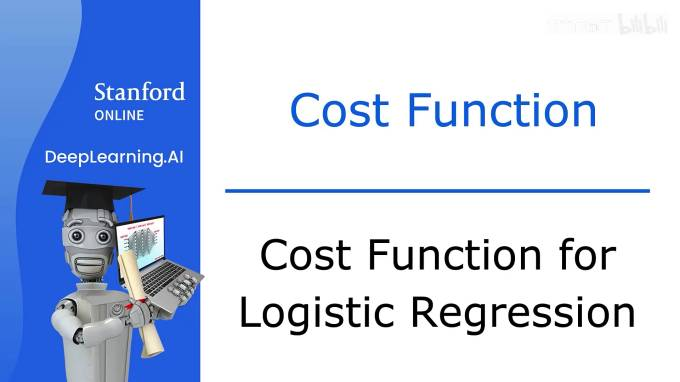
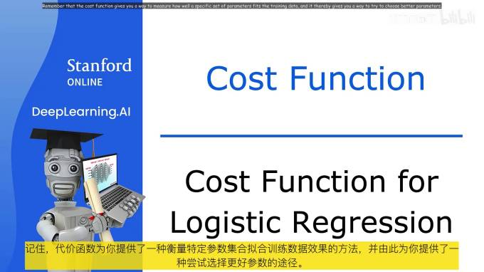
本视频我们将探讨为什么平方误差代价函数对于逻辑回归来说不是一个理想的代价函数，并将着眼于一个不同的代价函数，它能帮助我们为逻辑回归选择更好的参数。00:16
这是一个逻辑回归模型的训练集可能的模样，这里每一行可能对应一位去看医生并最终获得某种诊断的病人。00:31
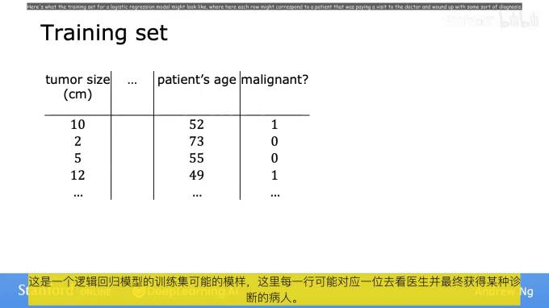
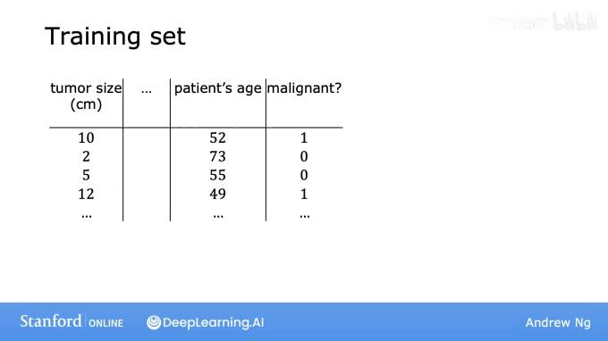
和之前一样，我们用 m 来表示训练样本的数量。00:46
每个训练样本都有一个或多个特征，比如肿瘤大小、病患年龄等等，总共有 n 个特征。00:53
那么，我们把这些特征叫做 x 一到 xn。01:04
由于这是一个二元分类任务，目标标签只能取两个值，要么零，要么一。01:09
最后，逻辑回归模型由这个等式定义。01:18
好的，那么你想要回答的问题是，给定这个训练集，你如何选择参数 w 和 b？01:24
回想一下，对于线性回归，这是平方误差代价函数。01:33
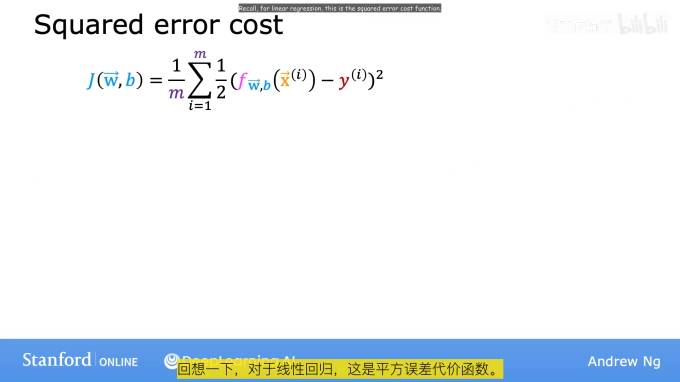
我唯一改变的一点是，我把那个二分之一放到了求和符号里面，而不是外面。01:38
你可能还记得，在线性回归的情况下，当 x 的 f 是线性函数 w 点乘 x 加 b 时，代价函数看起来像这样，是一个凸函数，形如弓形或吊床状。01:45
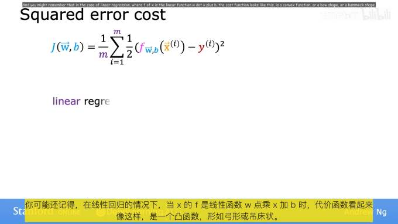
所以梯度下降看起来会是这样，你走一步，再走一步，再走一步，以此类推，最终收敛到全局最小。02:00
现在，你可以尝试为逻辑回归使用同样的代价函数，但结果是，如果我写出 x 的 f 等于一除以一加 e 的负 wx 加 b 次方，并用这个 x 的 f 的值绘制代价函数，那么代价将看起来像这样。02:11
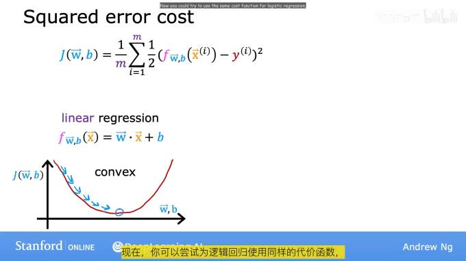
这变成了所谓的非凸代价函数。02:32
这意味着，如果你尝试使用梯度下降，这里有很多局部最小值会让你陷入困境。02:38
所以对于逻辑回归来说，这个平方误差代价函数并非一个好的选择。02:48
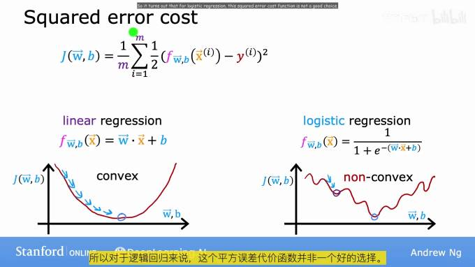
相反，将有一个不同的代价函数，它能使代价函数再次成为凸函数，从而保证梯度下降能收敛到全局最小值。02:55
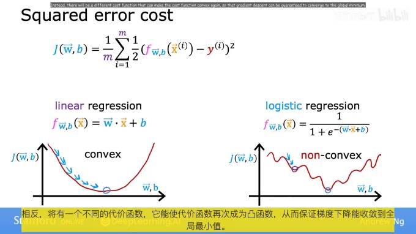
我唯一改变的一点是，我把那个二分之一放到了求和符号里面，而不是外面。03:06
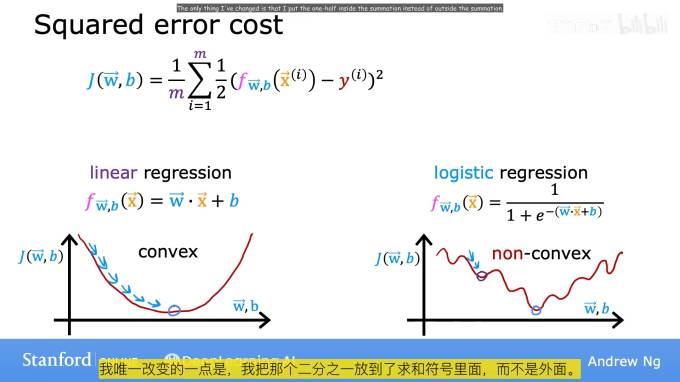
这会让你们稍后在这张幻灯片上看到的数学推导稍微简单一点。03:13
为了构建一个新的代价函数，一个我们将用于逻辑回归的代价函数，我要稍微改动一下代价函数关于 w 和 b 的定义。03:19
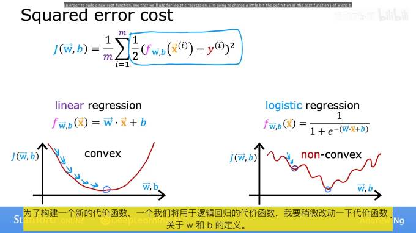
特别地，请看这个求和号内部，我们把这个项称为单个训练样本上的损失。03:30
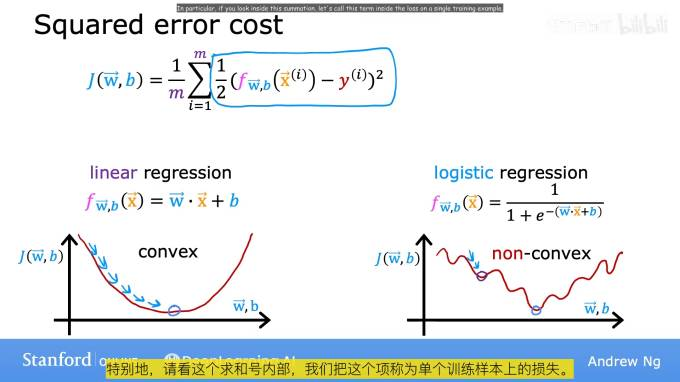
我将用这个大写 L 来表示损失，它是学习算法预测值 x 的 f 以及真实标签 y 的函数。03:41
所以，给定预测 f ofx 和真实标签 y 的损失，在这种情况下，等于二分之一乘以这个差值的平方。03:56
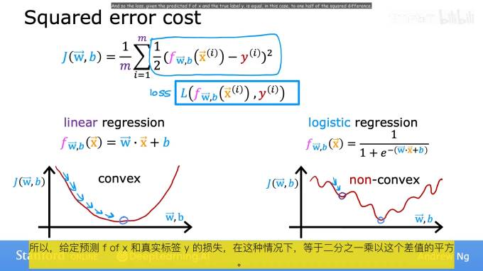
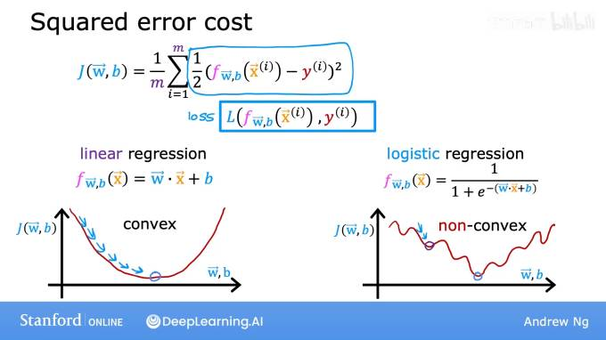
我们很快会看到，通过为这个损失函数选择一种不同的形式，我们将能够保持整体代价函数，也就是 m 分之一乘以这些损失函数之和，是一个凸函数。04:07
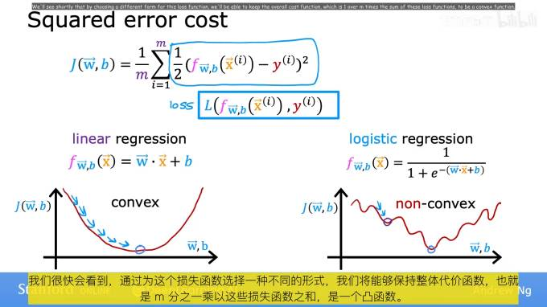
这个损失函数输入 x 的 f 和真实标签 y，并告诉我们在这个样本上我们做得有多好。04:21
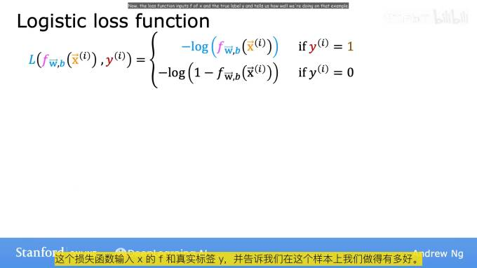
我就在这里写下我们将用于逻辑回归的损失函数的定义。04:32
如果标签等于零，那么损失就是一减 x 的 f 的负对数。04:40
我们来看看为什么这个损失函数希望是有道理的。04:57
让我们首先考虑 y 等于一的情况，并绘制这个函数的图像，以获得一些关于这个损失函数在做什么的直观理解。05:04
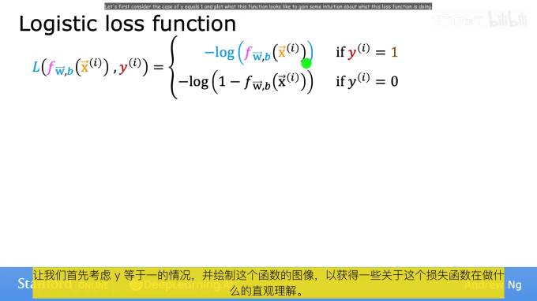
记住，损失函数衡量的是你在一个训练样本上的表现，而通过将所有训练样本上的损失加起来，你才得到了代价函数，它衡量的是你在整个训练集上的表现。05:15
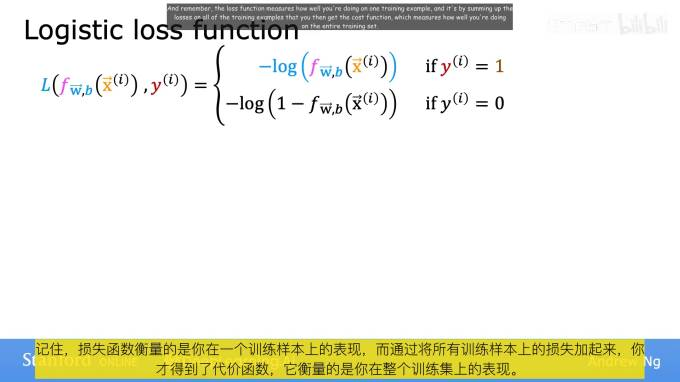
如果你画出 f 的对数，它看起来像这里的这条曲线，其中 f 在横轴上。05:31
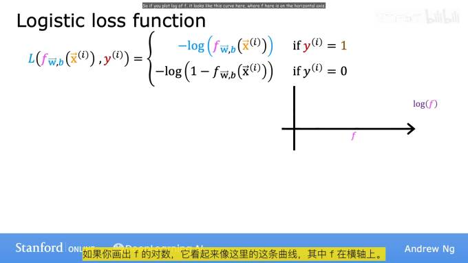
那么，f 的负对数的图像看起来像这样，我们只需将曲线沿横轴翻转即可。05:41
注意，它在 f 等于一处与横轴相交，并从那里继续向下。05:50
因此，f 始终在零到一之间，因为逻辑回归的输出总是在零到一之间。06:03
函数唯一相关的部分因此就是这里的这一段，对应于 f 在零到一之间。06:11
所以让我们放大并仔细看看图像的这部分。06:22
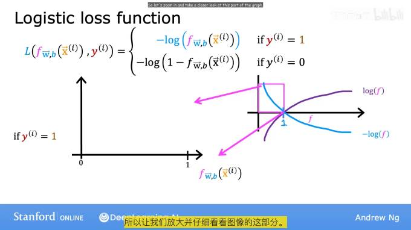
如果算法预测的概率接近于一且真实标签为一，那么损失就非常小。06:27
现在，继续以真实标签 y 为一的例子来说，假设它真的是恶性肿瘤，如果算法预测为零点五，那么损失位于这里这一点，稍高一些，但还不算太高。06:42
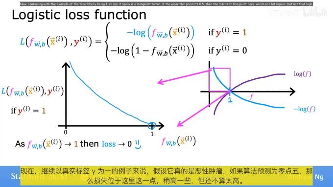
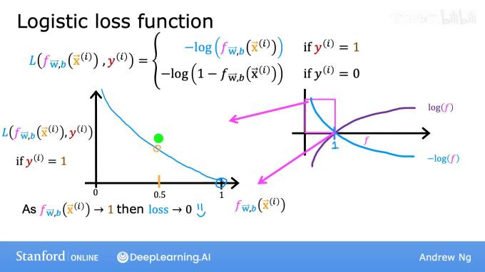
而相比之下，如果算法输出了零点一，如果它认为肿瘤恶性的几率只有百分之十，但 y 实际上是一，它确实是恶性的，那么损失就是这里这个高得多的值。07:00
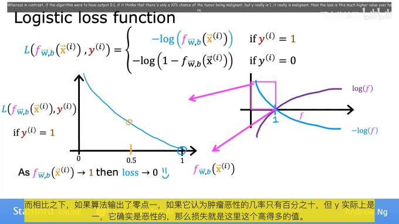
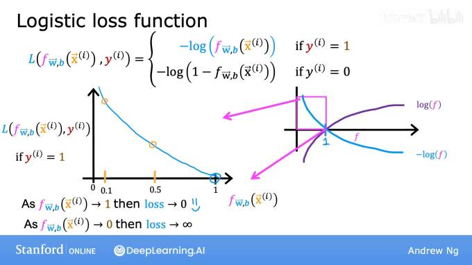
所以当等于一时，损失函数激励或者说推动、帮助算法去做出更准确的预测，因为当它预测的值接近一时，损失是最低的。07:19
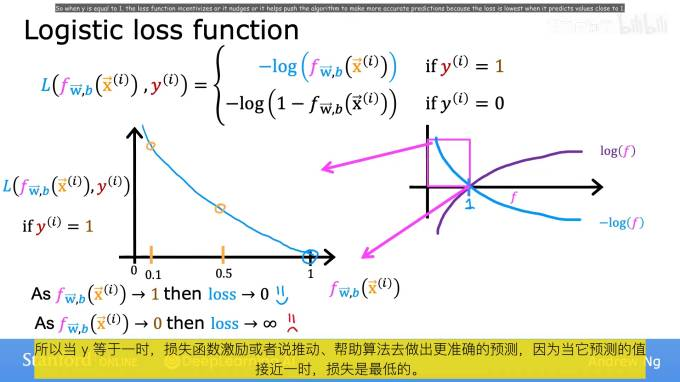
在这张幻灯片上，我们一直在看 y 等于一时的损失情况。07:33
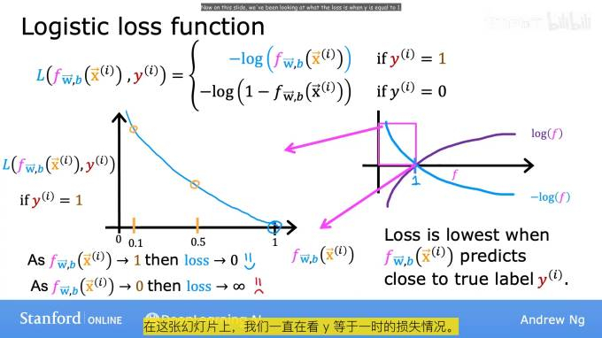
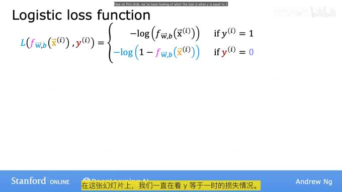
在这张幻灯片上，我们来看损失函数的第二部分，对应于 y 等于零的情况。07:39
在这种情况下，损失是一减 x 的 f 的负对数。07:46
当绘制这个函数时，它实际上看起来像这样。07:53
f 的范围被限制在零到一，因为逻辑回归只输出零到一之间的值。07:57
如果我们放大来看，这就是它的样子。08:06
因此在这张图中，对应等于零，纵轴显示了不同 x 的 f 值对应的损失值。08:10
当 f 为零或非常接近于零时，损失也会非常小，这意味着如果真实标签是零，而模型的预测非常接近于零，那么，你几乎就猜对了。08:23
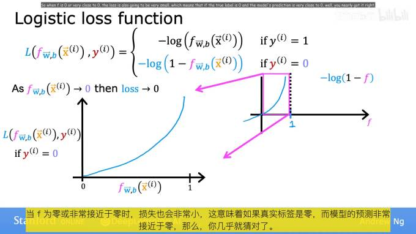
所以损失相应地也非常接近于零。08:37
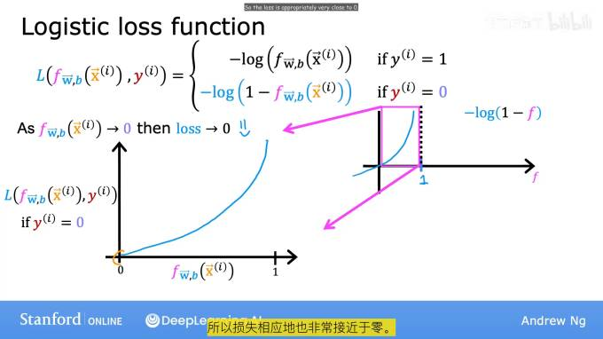
x 的 f 的值越大，损失就越大，因为预测离真实标签零更远了。08:41
事实上，当预测值接近一时，损失实际上趋于无穷大。08:50
回到肿瘤预测的例子，这说的是，如果模型预测病患的肿瘤几乎可以确定是恶性的，比如有百分之九十九点九的恶性几率。08:57
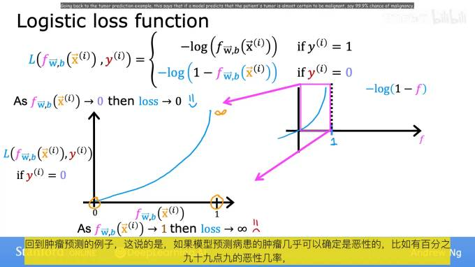
但结果它其实不是恶性的。09:08
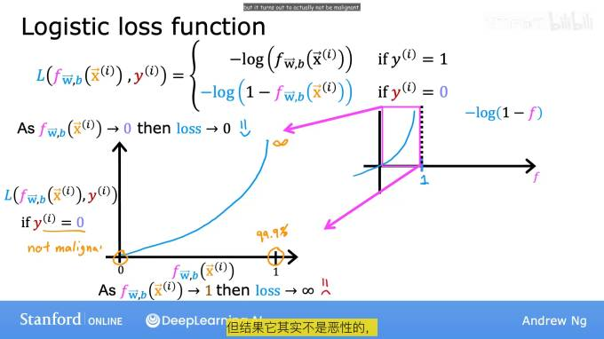
那么我们用一个非常高的损失来惩罚模型。09:14
所以在这种 y 等于零的情况下，与上一张幻灯片中 y 等于一的情况相似，预测 f of x 离 y 的真实值越远，损失就越高。09:18
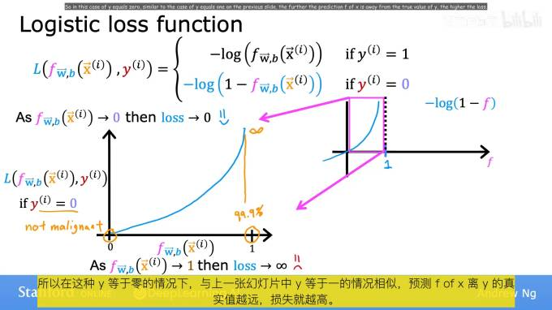
事实上，如果 f ofx 趋近于零，这里的损失实际上会变得非常非常大，实际上趋于无穷大。09:30
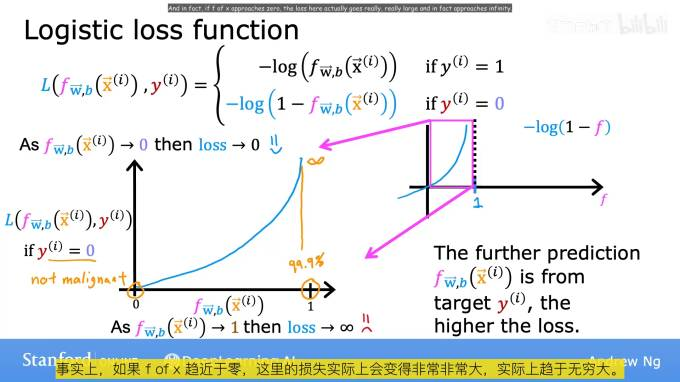
所以当真实标签为一时，算法被强烈激励着不要预测太接近零的值。09:41
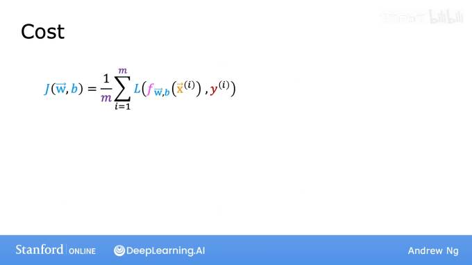
那么在本视频中，你了解了为什么平方误差代价函数对逻辑回归效果不佳。09:50
我们还定义了单个训练样本的损失，并为逻辑回归的损失函数提出了一个新定义。09:58
事实证明，采用这种损失函数的选择，整体代价函数将是凸的，因此你可以可靠地使用梯度下降来将你带到全局最小值。10:10
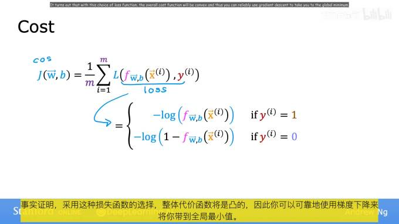
证明这个函数是凸的已超出本课程的范围。10:22
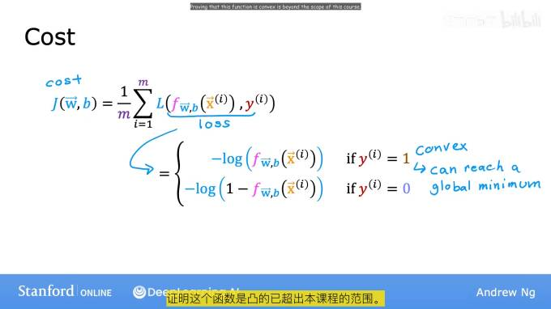
你可能还记得，代价函数是整个训练集的函数，因此是各个训练样本上损失函数的平均值，或者说 m 分之一乘以它们之和。10:28
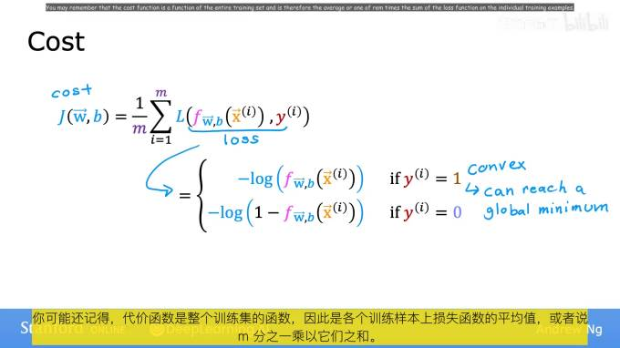
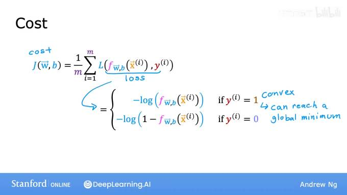
所以，特定参数集合 W 和 b 上的代价等于，m 分之一乘以所有训练样本上的损失之和。10:42
如果你能找到一组参数 w 和 b 的值来最小化这个代价，那么你就为逻辑回归获得了一组相当好的参数 w 和 b 的值。10:57
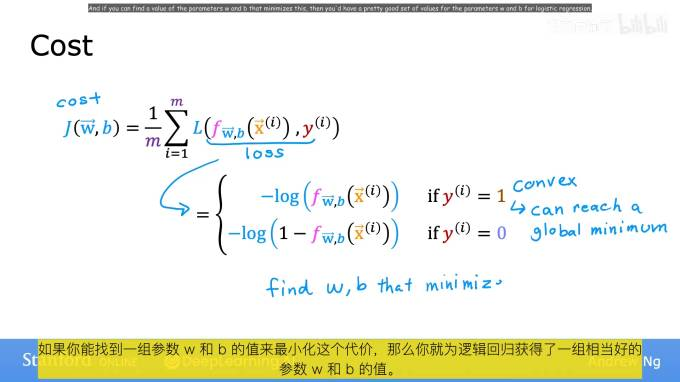
在接下来的选修实验中，你可以看看平方误差代价函数是如何在分类问题上效果不佳的，因为你会。g 看到曲面图导致了一个非常波动的、有许多局部最小值代价曲面。11:09
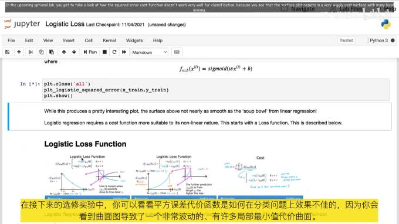
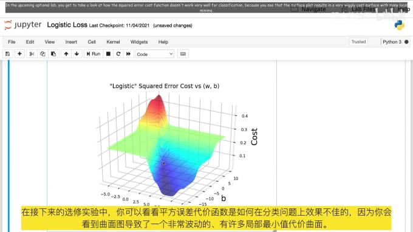
然后你会看到新的逻辑损失函数。11:25
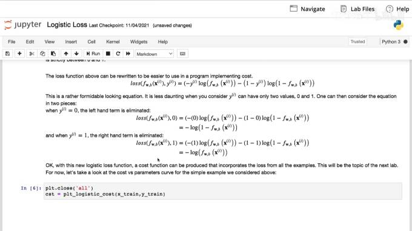
正如你在此所见，这产生了一个漂亮且平滑的凸曲面图，没有那些局部最小值。11:30
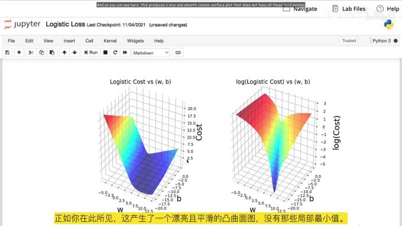
所以请在这个视频之后看看代码和图表。11:39
好的，那么本视频我们看了很多内容。11:46
在下个视频中，让我们回过头来，取单个训练样本的损失函数，并用它来定义整个训练集的整体代价函数。11:48
我们也将找出一种更简单的方法写出代价函数，这将随后允许我们运行梯度下降来为逻辑回归找到好的参数。12:08
让我们进入下一个视频。12:09